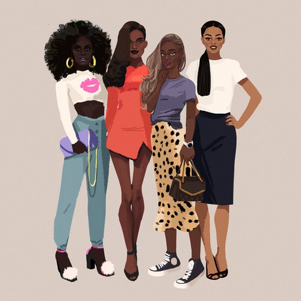
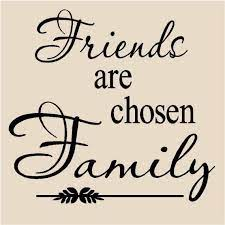

2. Mom, Sister,Nieces Thank you for every lesson, all the knowledge and for being amazing people in this world. Amazing women who understand me and are always there when I am in need. Blood made us family, but I would pick y'all even if it wasn't that way. Life will always be great with you beautiful and amazing women.
1. To Gianni... My pride and joy. My baby boy. I love you more than I could ever explained. You taught me things no one else could. You are the only human to hear my heartbeat from the inside.

3. Best Friends... Britney, Desira, Katavia, Eboni and Danasia.. You've seen me at my worst, my best, my lows and highs. You were there when it mattered and I am grateful for the amazing memories we have together. We've shared some of the highlights of my life and I am proud to know such amazing women like you all. Whats understood doesn't need to be explained.

4. Wayne State Fam... I met you all at a turn in my life and my life has been turning since. Thank You for coming along willingly and giving great advice. Taking me in aws your own family, I could never repay you all, but the family I found within you and your family, isnt something I can put into words. Thank You.

5. The Taylor Family... Joe! You came with an entire loving family. We did meet in college, but we've our relationship goes beyond that. I know there will always be someone praying for me even when we're far apart. The entire family means to me what I mean to them. Unconditional love is of abundance having you in my life. A toast to phenomenal people, doing phenomenal things. Thank You.